Plug-Ins
Los plugins son componentes adicionales de Vesta que le permiten acceder a un aplicativo y descubrir u obtener automáticamente sus configuraciones.
VESTA cuenta con una serie de Plug-ins Oracle WebLogic 11g, y WebLogic 12c que permiten la generación automatizada de componentes, estos “Plug-ins” a su vez están encargados de recuperar las configuraciones de los servidores y almacenarlos en la aplicación en modo de “Entradas”, mismas que son asociadas a una aplicación y a un ambiente en particular.
También se dispone de los Plug-ins Oracle SOA Suite 11g y 12g que permiten la administración de configuraciones de componentes principales.
Es importante mencionar que se debe instalar el plugin de acuerdo con la versión de Weblogic que se tenga instalado, por ejemplo, si se cuenta con WebLogic 11g se debe de instalar su plugin de WebLogic 11g.
Intall WebLogic 11g
Se procede a la instalación de WebLogic 11g
Click Plug-Ins > Install> WebLogic 11g > General.
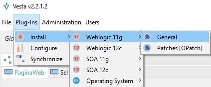
Nota: El release 11g de WebLogic corresponden a las versiones 10.3.x de WebLogic.
En la siguiente pantalla se deberá seleccionar el plug-in a instalar, se solicitará una serie de archivos y directorios requeridos. Para el caso de los plug-ins de WebLogic 11g y WebLogic 12c, los siguientes datos son solicitados:
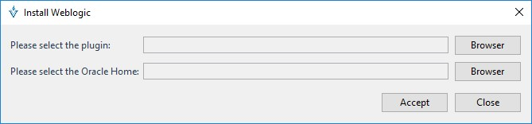
Browser Este botón permite seleccionar el archivo .zip que contiene los binarios de instalación.
Browser Este botón permite seleccionar el directorio ORACLE_HOME de una instalación local de WebLogic 11g o WebLogic 12c respectivamente.
Al finalizar el proceso de instalación, la aplicación deberá ser reiniciada.
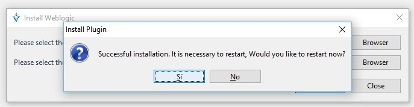
Configuración de Plug-in “WebLogic 11g”
Una vez que el plugin se encuentra instalado en la aplicación, se procede a configurarlo.
Click Plug-Ins > Configure
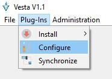
En la siguiente pantalla se deberá seleccionar la “Aplicación y Ambiente” al cual estará asociado el Plug-in “WebLogic 11g”. Es importante conocer que una misma Aplicación” y Ambiente” pueden estar asociados a múltiples plug-ins.
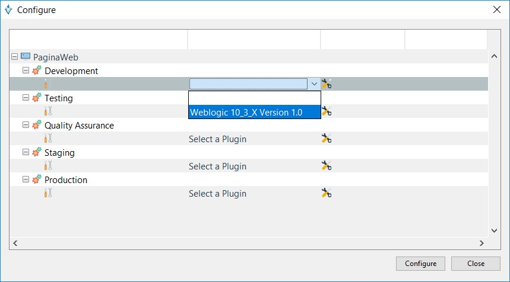
En la siguiente pantalla se deberán ingresar los datos de conexión al servidor de dominio “WebLogic 11g”.
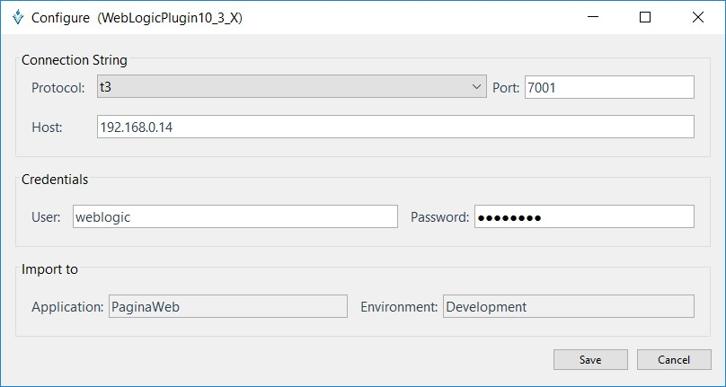
Servidor: IP en donde recibe peticiones el servidor de dominio WebLogic.
Puerto: Puerto en donde recibe peticiones el servidor de dominio WebLogic (Admin Server).
Usuario: Usuario de conexión, este usuario deberá pertenecer al grupo de dominio WebLogic “Administrators”.
Password: Contraseña del usuario de conexión.
El proceso de conexión al servidor es iniciado, en ese momento las diferentes entradas de configuración en el servidor de dominio “WebLogic” serán descubiertas.
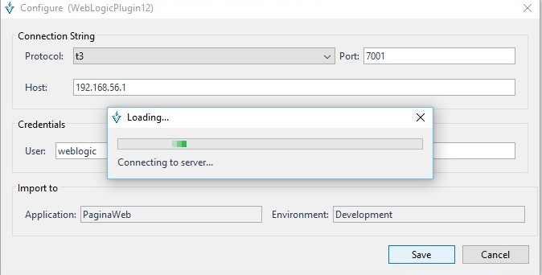
Recuperación de la configuración “WebLogic”
En la siguiente pantalla se deberá seleccionar las entradas de configuración a descargar desde el servidor de dominio “WebLogic 11g”.
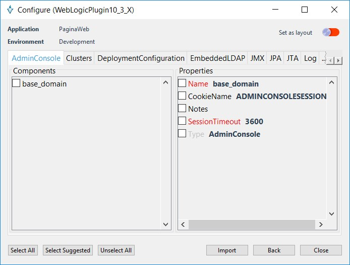
Select All Este botón selecciona todas las propiedades del componente de configuración seleccionado.
Select Suggested Este botón selecciona las propiedades del componente de configuración sugeridas por el sistema.
Nota: Las propiedades sugeridas por el sistema indican los campos necesarios para el proceso de aprovisionamiento de la configuración en el servidor de dominio “WebLogic”.
Unselect All Este botón deselecciona todas las propiedades del componente de configuración seleccionado.
Set as layout Esta opción cuando está habilitada permite guardar las entradas de configuración como plantilla, de manera que para próximas importaciones de otros ambientes se pre-seleccionen las entradas de configuraciones definidas en la plantilla.
Import Este botón realiza la importación de las configuraciones seleccionadas desde WebLogic hacia Vesta.
Una vez seleccionadas las entradas de configuración el proceso de descarga de la configuración es iniciado.
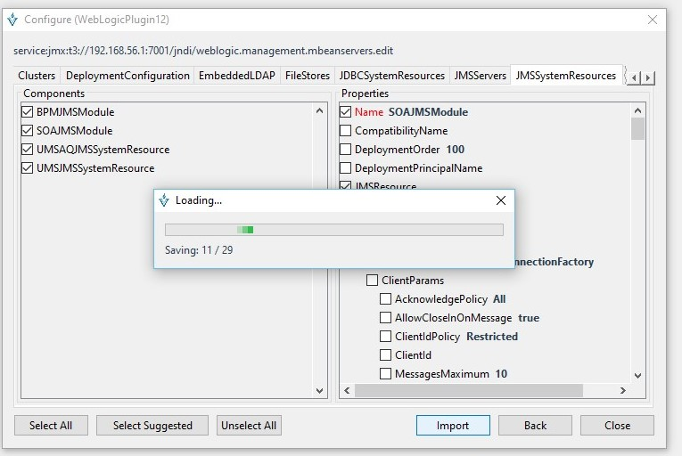
Listar entradas “WebLogic 11g”
En la siguiente pantalla se muestran las entradas de configuración provenientes de un plug-in, estas entradas son identificadas mediante iconos de color “morado”.
Click File > Entries
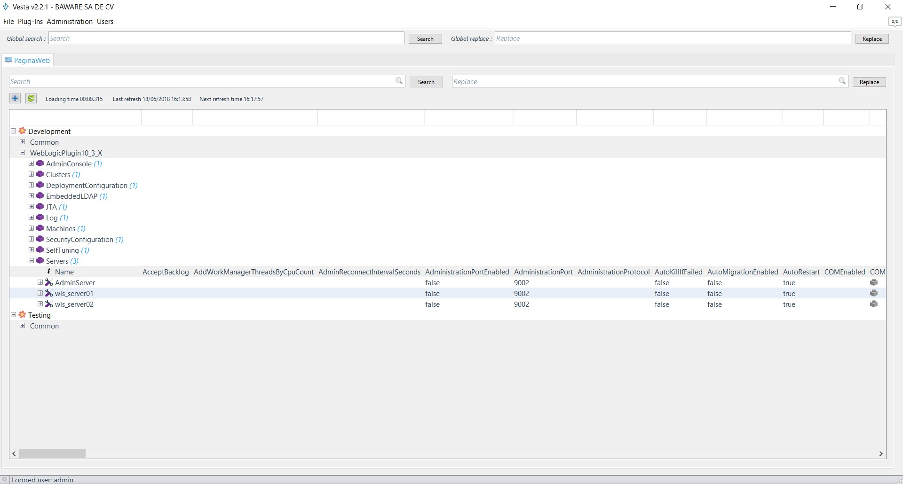
Opciones sobre entradas en plugins
Una vez que han sido definidas las entradas de plugins, se cuenta con una serie de opciones a realizar sobre ellas, estas opciones se encuentran en el menú emergente sobre la entrada seleccionada.
Opciones generales
Las siguientes opciones se encuentran descritas en la sección Configuración inicial > Opciones sobre entradas
- Acquiere control
- Release control
- View entry
- Duplicate entry
- Promote entry
- Delete entry
- View children
- View History
- Tree History
- Copy Selection
- Copy property
- Compare
Migrate to
Esta opción permite migrar una configuración de 11g a una configuración de 12c.
Right click entry > Migrate to > Version to migrate
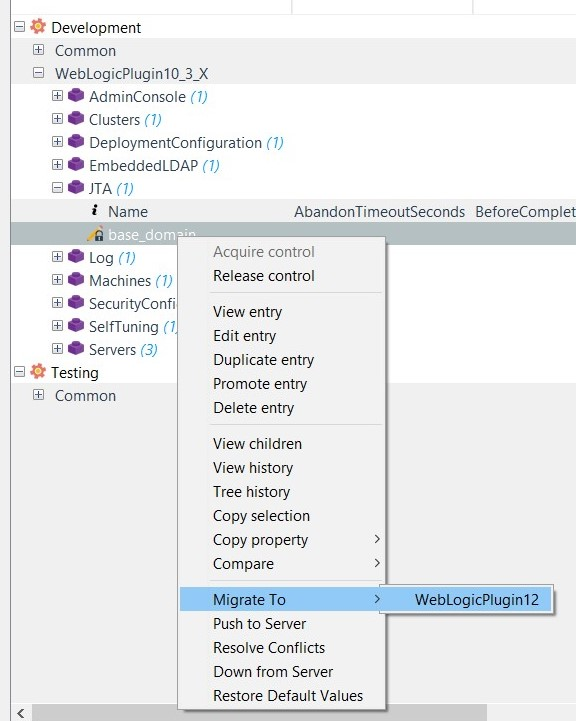
Push to Server (Individual)
Esta opción permite enviar la entrada de configuración seleccionada hacia el servidor de dominio “WebLogic” destino. Nota: Esta opción solo está disponible para “entradas de configuración” asociadas a plug-ins.
Right Click > Push to Server
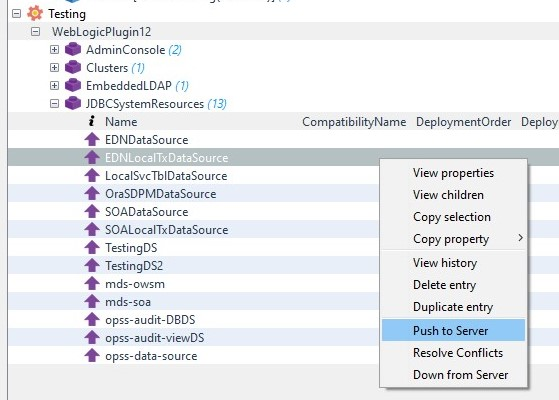
Confirmación es requerida
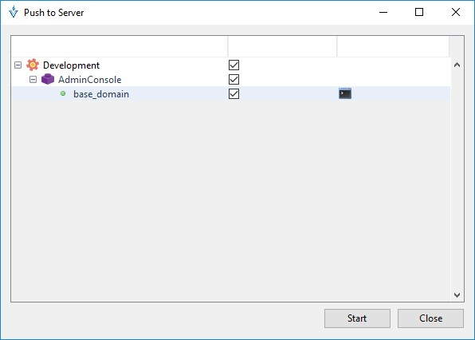
Start Al presionar este botón el proceso de aprovisionamiento de la configuración es iniciado.
Close Este botón es habilitado una vez finaliza el proceso de aprovisionamiento de la configuración.
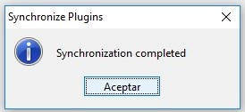
Cuando una configuración no pudo ser aprovisionada en el servidor de dominio “WebLogic” manda la siguiente pantalla indicando el inconveniente:
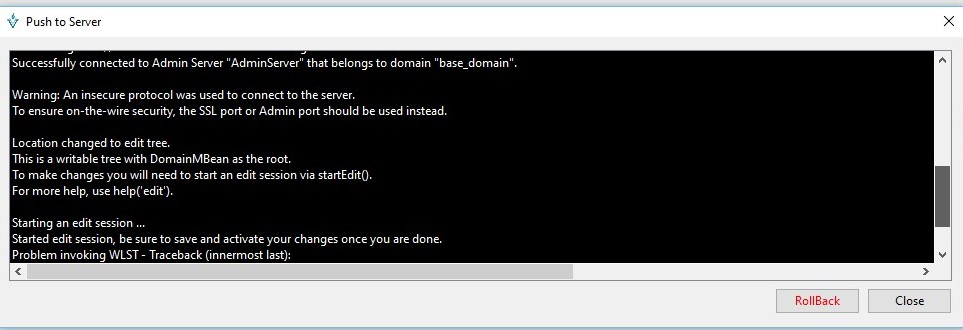
RollBack Este botón es habilitado cuando una configuración no pudo ser aprovisionada en el servidor de dominio “WebLogic” permitiendo así deshacer los cambios en conflicto.
Resolver conflictos
Esta opción permite resolver conflictos de sincronización entre la configuración almacenada en Vesta y la configuración en el servidor “WebLogic”. Esta opción es útil cuando el envío de la configuración realizada hacia el servidor de dominio “WebLogic” no pudo comprobarse de manera automática por el sistema. Garantizando que la configuración almacenada en Vesta y la configuración del servidor de dominio “WebLogic” es concisa.
Notas:
Validación manual por parte del usuario dentro del servidor de dominio “WebLogic” es necesaria.
Esta opción solo está disponible para “entradas de configuración” asociadas a plug-ins.
Right Click > Resolve Conflicts
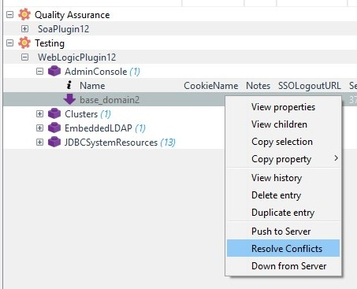
Al ingresar a “Resolver Conflicts”, muestra en pantalla un mensaje preguntando si está seguro de realizar dicha acción.
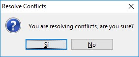
Si Al presionar este botón el proceso de resolución de la configuración es iniciado.
No Al presionar este botón el proceso de resolución de la configuración es cancelado.
Resultados: Cuando un conflicto es resuelto, el icono asociado a la entrada de configuración es cambiado de dirección.
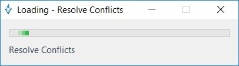
Al termino, muestra el mensaje de que se resolvió el conflicto.
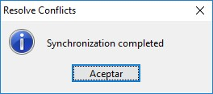
Down from Server
Esta opción permite descargar los cambios de configuración desde el servidor de dominio “WebLogic” hacia la entrada de configuración seleccionada dentro de la aplicación.
Nota: Esta opción solo está disponible para “entradas de configuración” asociadas a plug-ins.
Right Click > Down from Server
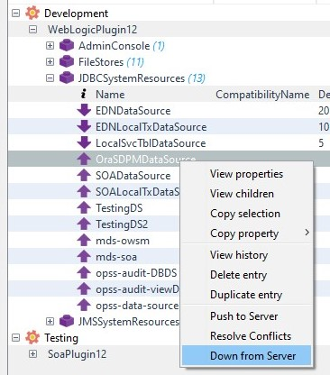
Al seleccionar esta opción empieza cargar, una vez terminado, muestra la ventana
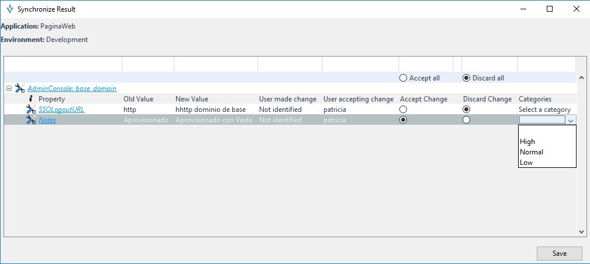
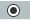 Esta opción permite aceptar el cambio pendiente desde el servidor de dominio “WebLogic”.
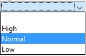 Esta opción permite la selección de categoría. Es útil cuando se desea identificar un cambio de alta prioridad de manera visual.
Nota: El historial de cambios sobre las entradas de configuración descargadas será actualizado de manera automática.
La siguiente pantalla muestra el resumen de cambios descargados desde el servidor de dominio “WebLogic” hacia VESTA. Los enlaces situados en la parte superior del cambio permiten la navegación a la entrada de configuración modificada.
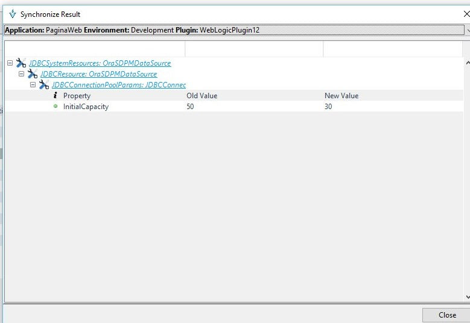
Al presionar los enlaces situados en la parte superior de la entrada de configuración se mostrará la pantalla “visualización de entradas”.
La siguiente pantalla permite visualizar las entradas de configuración descargadas desde el servidor de dominio “WebLogic”.
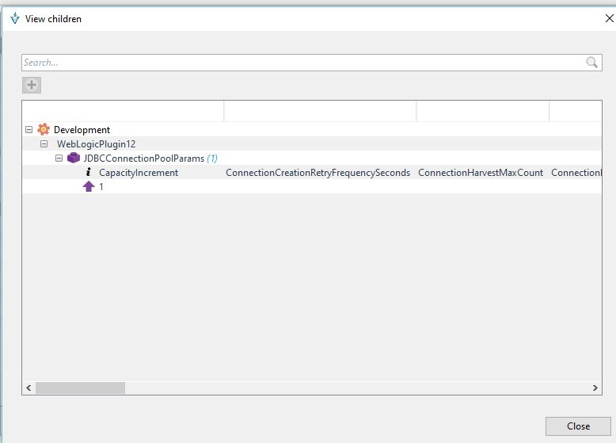
Restore default values
Esta opción establece los valores por default de toda la entrada de configuración, los valores por default son los establecidos por el fabricante del application server.
Right click entry > Restore default values
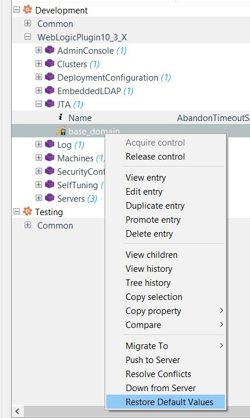
Sincronización de Plug-in “WebLogic”
El proceso de sincronización es el método mediante el cual las diferentes entradas de configuración almacenadas en VESTA y las configuraciones en el servidor de dominio “WebLogic” son sincronizadas.
Nota: Esta opción es útil cuando se desea sincronizar más de una entrada de configuración entre el servidor de dominio “WebLogic” y Vesta.
Click Plug-Ins > Synchronize
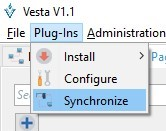
Al ingresar a la opción de sincronización, muestra la siguiente ventana:
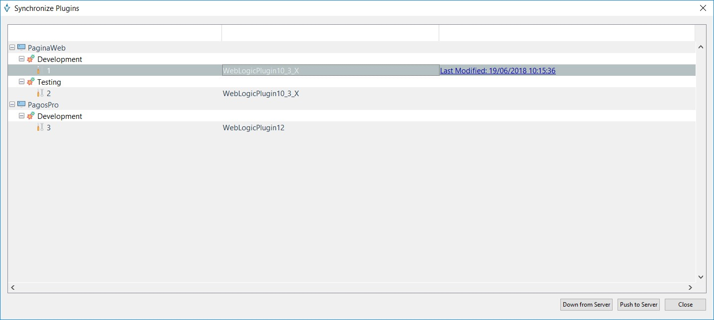
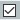 Esta opción selecciona la aplicación y ambiente a sincronizar.
Push to Server Al presionar este botón las entradas de configuración almacenados en Vesta son enviadas hacia el servidor de dominio “WebLogic”.
Down from Server Al presionar este botón las entradas de configuración almacenados en el servidor de dominio “WebLogic” son descargados hacia Vesta.
Push to server
Esta opción permite enviar de manera selectiva un conjunto de configuraciones almacenadas en Vesta hacia el servidor de dominio “WebLogic”.
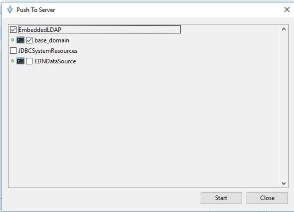
Nota: Esta opción es útil cuando se desea enviar un conjunto de configuraciones de manera global.
Start Al presionar este botón el proceso de aprovisionamiento de la configuración es iniciado.
Close Este botón es habilitado una vez finaliza el proceso de aprovisionamiento de la configuración.
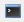Esta opción permite la visualización del archivo log generado durante el proceso de aprovisionamiento de la configuración.
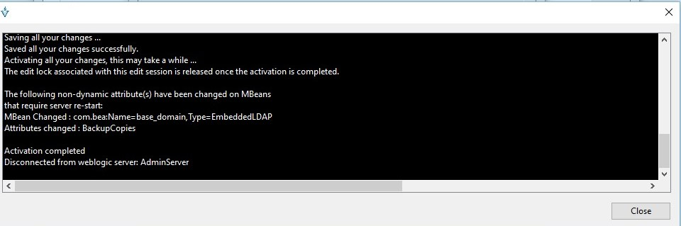
Down from server
Esta opción permite descargar de manera selectiva un conjunto de configuraciones desde el servidor de dominio “WebLogic” hacia Vesta.

Nota: Esta opción es útil cuando se desea descargar un conjunto de configuraciones de manera global.
Esta opción permite aceptar el cambio pendiente desde el servidor de dominio “WebLogic”.
Esta opción permite la selección de categoría. Esta opción es útil cuando se desea identificar un cambio de alta prioridad de manera visual.
La siguiente pantalla muestra el resumen de cambios descargados desde el servidor de dominio “WebLogic” hacia Vesta. Los enlaces situados en la parte superior del cambio permiten la navegación a la entrada de configuración modificado.
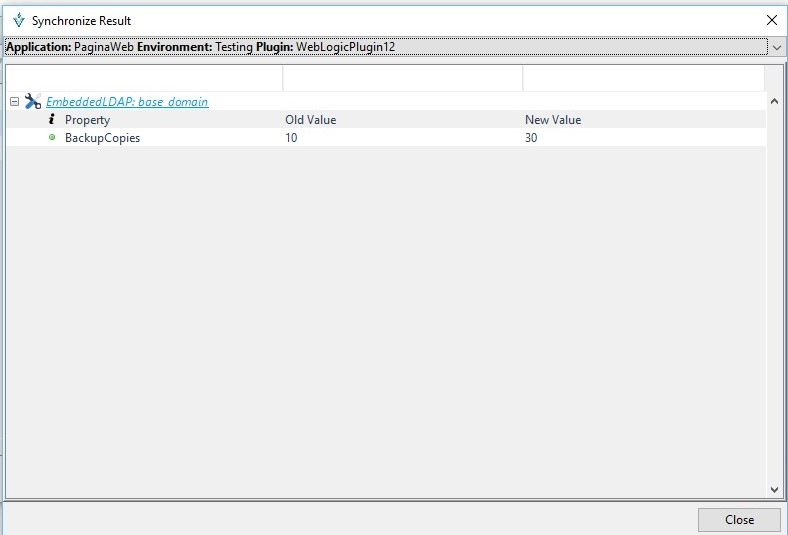
Al presionar los enlaces situados en la parte superior de la entrada de configuración se mostrará la pantalla “visualización de entradas”.
La siguiente pantalla permite visualizar las entradas de configuración descargados desde el servidor de dominio “WebLogic”.
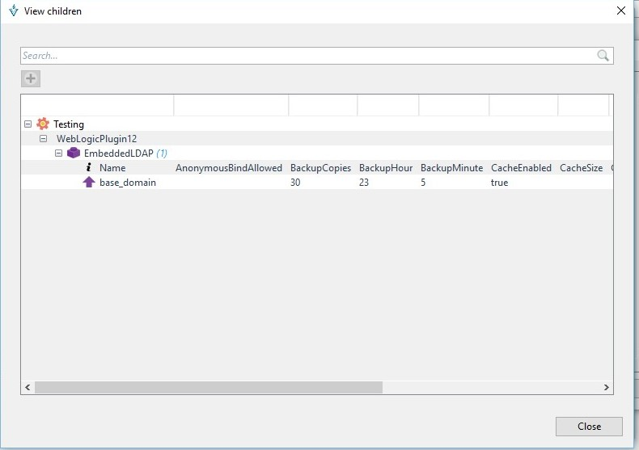